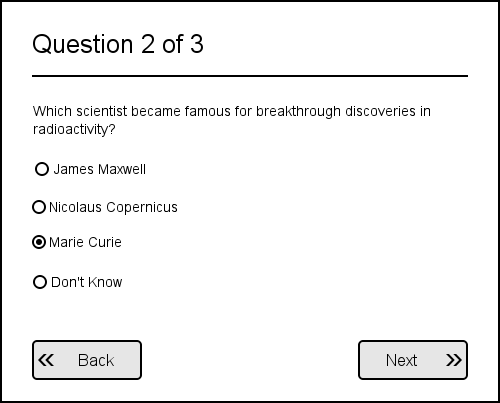
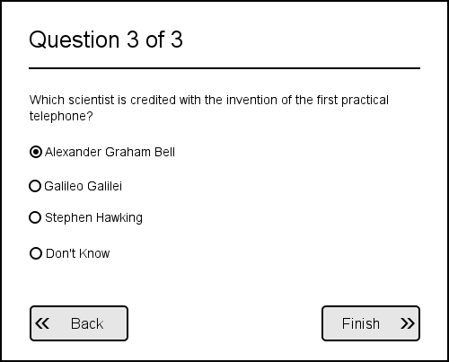
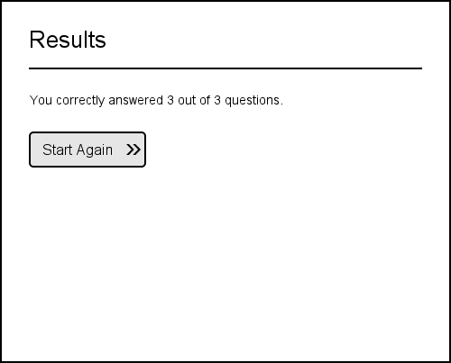

Your task is so write a simple multiple choice quiz.
The quiz should take an array of questions as it's input.
{% highlight javascript %} var questions = [ { question: "Which scientist changed the world with research into Theoretical Physics?", options: [ "Marie Curie", "Albert Einstein", "Edwin Hubble" ], correctAnswer: 1 }, { question: "Which scientist became famous for breakthrough discoveries in radioactivity?", options: [ "James Maxwell", "Nicolaus Copernicus", "Marie Curie" ], correctAnswer: 2 }, { question: "Which scientist is credited with the invention of the first practical telephone?", options: [ "Alexander Graham Bell", "Galileo Galilei", "Stephen Hawking" ], correctAnswer: 0 } ]; {% endhighlight %}There can be any number of questions, and each question can have any number of possible option answers.
A Don't Know option is automatically added to each question.
Each question can only have one correct answer.


At the end of the quiz display how many questions were answered correctly.

The Next and Back buttons allow navigation
between the pages. All answers should be remembered.
The Start Again button on the last page resets the quiz
answers and starts over from the beginning.
The pages should work on both small and large displays and should adjust their widths according to the size of the container.
Feel free to enhance your application with nicer styles or improved functionality